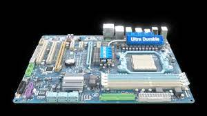

¿Qué son las placas madre?
Las placas madre, también conocidas como placas base o motherboards en inglés, son componentes fundamentales de las computadoras y otros dispositivos electrónicos. Funcionan como una plataforma que conecta y coordina todos los componentes esenciales de un sistema informático, como el procesador (CPU), la memoria (RAM), las unidades de almacenamiento (como discos duros y SSDs), las tarjetas gráficas y otros dispositivos de entrada/salida.
Funcionamiento
La placa madre funciona como una "carretera" que conecta todos los componentes de la computadora entre sí. Proporciona los puertos de conexión física y los circuitos necesarios para que los diferentes dispositivos se comuniquen entre sí y con el procesador. Controla el flujo de datos entre los diferentes componentes y gestiona las señales eléctricas para garantizar un funcionamiento adecuado del sistema.

Características principales
-
Conectores y Puertos: Las placas madre tienen una variedad de conectores y puertos para conectar componentes como el procesador, la memoria RAM, tarjetas de expansión (como tarjetas gráficas, de sonido, etc.), unidades de almacenamiento (SATA, M.2, etc.), dispositivos USB, y más.
-
Chipset: El chipset es un conjunto de chips en la placa madre que controla varias funciones, como la comunicación entre el procesador y otros componentes, la gestión de puertos USB, SATA, etc.
-
BIOS/UEFI: Es un software básico almacenado en un chip en la placa madre que inicia el sistema y permite la configuración de parámetros básicos del hardware antes de cargar el sistema operativo.
-
Factor de forma: Determina el tamaño y la disposición física de la placa madre, lo que puede afectar la capacidad de expansión y el tipo de chasis en el que se puede montar.
-
Ranuras de expansión: Permiten la instalación de tarjetas adicionales, como tarjetas gráficas, tarjetas de sonido, tarjetas de red, etc.
-
Compatibilidad de CPU y RAM: Las placas madre están diseñadas para ser compatibles con ciertos tipos y generaciones de procesadores y memoria RAM.
Historia
Las placas madre evolucionaron a partir de los primeros sistemas de computadoras que consistían en placas individuales para cada componente. A medida que la tecnología avanzaba, se desarrollaron placas madre que integraban varios componentes en una sola placa, lo que permitía una mayor eficiencia y reducción de costos. A lo largo de las décadas, las placas madre han experimentado numerosas mejoras en términos de capacidad de procesamiento, capacidad de expansión, conectividad y tamaño.

entre los cambios y mejoras gweneracionales tenemos:
-
Primera Generación (Década de 1970 - 1980):
- Las primeras placas madre eran simples y consistían en circuitos impresos que conectaban componentes básicos como la CPU, memoria y puertos de entrada/salida.
- Solían ser grandes y estaban diseñadas para sistemas de computadoras de tamaño considerable.
-
Segunda Generación (Década de 1980 - 1990):
- Se introdujeron las primeras interfaces estándar, como ISA (Industry Standard Architecture), que permitían la conexión de tarjetas de expansión para funcionalidades adicionales como gráficos, sonido y red.
- Se adoptaron procesadores como el Intel 8086 y 80286, lo que llevó a la introducción de nuevos tipos de sockets y factores de forma para acomodar estas CPU.
-
Tercera Generación (Década de 1990 - 2000):
- Se popularizaron interfaces más avanzadas como PCI (Peripheral Component Interconnect), AGP (Accelerated Graphics Port) para tarjetas gráficas, y USB para periféricos.
- Surgieron los primeros estándares de BIOS y UEFI, que permitían una mejor gestión del hardware y la configuración del sistema.
- Aparecieron factores de forma más compactos como ATX (Advanced Technology eXtended), que permitían diseños de chasis más eficientes y compactos.
-
Cuarta Generación (Década de 2000 - 2010):
- Se introdujeron interfaces más rápidas como SATA para unidades de almacenamiento y PCI Express (PCIe) para tarjetas de expansión, mejorando significativamente la velocidad y la capacidad de expansión.
- Aumentó la integración de componentes en la placa madre, incluyendo controladores de red, audio, y gráficos integrados en el chipset.
- Se introdujeron estándares de memoria más rápidos como DDR2 y DDR3, aumentando la velocidad y capacidad de la memoria del sistema.
-
Quinta Generación (Década de 2010 - Presente):
- Se han realizado avances significativos en términos de eficiencia energética, soporte para múltiples núcleos de CPU, y conectividad de alta velocidad como USB 3.0/3.1, Thunderbolt y PCIe Gen 3/4/5.
- Las placas madre ahora integran características avanzadas como Wi-Fi, Bluetooth, y múltiples puertos de red Gigabit.
- Se ha incrementado la capacidad de expansión y personalización mediante la introducción de ranuras M.2 para SSDs NVMe y ranuras PCIe adicionales para tarjetas de expansión de alta gama como las tarjetas gráficas.